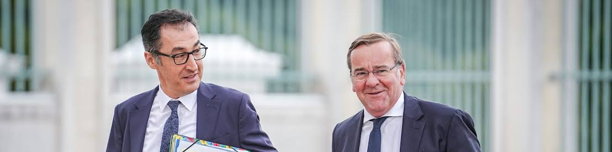

Verbotsverfahren vor der Wahl

Acht Tage vor der Landtagswahl in Sachsen-Anhalt fordern Boris Pistorius und Cem Özdemir ein Verbotsverfahren mit Fokus auf vier AfD-Landesverbände.
In einem Gastbeitrag plädieren der SPD-Verteidigungsminister und der grüne Ministerpräsident für eine „baldmöglichste Einleitung eines Verbotsverfahrens“. Im Fokus: Thüringen, Sachsen, Sachsen-Anhalt und Brandenburg. Die Tagesschau gibt den Wortlaut wieder.
Das Verfahren ist nicht das Verbot.
Einen Antrag können nach Paragraf 43 des Bundesverfassungsgerichtsgesetzes Bundestag, Bundesrat oder Bundesregierung stellen. Eine Landesregierung darf das nur gegen eine Partei, deren Organisation sich auf ihr Land beschränkt. Karlsruhe kann eine Entscheidung nach Paragraf 46 auf einen rechtlich oder organisatorisch selbständigen Teil beschränken.
Über die Verfassungswidrigkeit entscheidet nach Artikel 21 des Grundgesetzes allein das Bundesverfassungsgericht. Pistorius und Özdemir werben also dafür, dass ein antragsberechtigtes Verfassungsorgan Karlsruhe anruft. Einen Antrag haben sie nicht gestellt. Ein Verbot haben sie nicht beschlossen.
Der politische Zeitpunkt bleibt: Am 6. September wird in Sachsen-Anhalt über Mehrheiten abgestimmt. Acht Tage vorher wird das Parteienverbot selbst zum Wahlkampfthema.